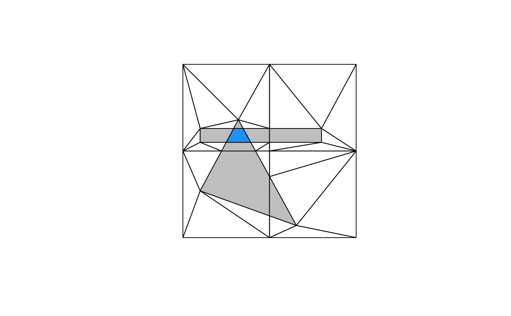

Dissolve the triangles of a polymer into polygons, one for each distinct
set of covering input features. This is the n-ary intersection of all
layers (the same partition that sf::st_intersection() computes for a
single layer), derived from the mesh rather than from pairwise overlay.
Arguments
- x
A polymer (see
polymer()).- ...
Ignored.
- n
Minimum number of covering features, for
layer_n().
Value
A data frame with one row per piece and columns
n: the number of input features covering the piece.origins: a list column, each element a data frame oflayerandfeature(row within its layer) for the features covering the piece.geometry: awk::wkb()vector with the polymer's coordinate reference system. Convert withsf::st_as_sf()if you work with 'sf'.
Details
layer_n() keeps the pieces covered by at least n features.
Pieces are dissolved along mesh edges, so they share vertices exactly where they touch. Outer rings are counter-clockwise and holes clockwise. Every piece is a MULTIPOLYGON, with one polygon for each connected part.
Examples
pool <- polymer(A, B, C)
pieces <- fuse(pool)
pieces[c("n", "geometry")]
#> n
#> 1 2
#> 2 1
#> 3 1
#> 4 1
#> 5 1
#> 6 2
#> 7 2
#> 8 2
#> 9 2
#> 10 3
#> geometry
#> 1 <MULTIPOLYGON (((0.5 0.1258559, 0.5 0.3522388, 0.4188525 0.5, 0.2234146 0.5, 0.1 0.27, 0.5 0.1258559...>
#> 2 <MULTIPOLYGON (((0.3913934 0.55, 0.4188525 0.5, 0.5 0.5, 0.5 0.55, 0.3913934 0.55)), ((0.1 0.55...>
#> 3 <MULTIPOLYGON (((0.5 0.63, 0.8 0.63, 0.8 0.55, 0.5 0.55, 0.5 0.5, 1 0.5...>
#> 4 <MULTIPOLYGON (((1 0, 1 0.5, 0.5 0.5, 0.5 0.3522388, 0.655 0.07, 0.5 0.1258559...>
#> 5 <MULTIPOLYGON (((0.2234146 0.5, 0 0.5, 0 0, 0.5 0, 0.5 0.1258559, 0.1 0.27...>
#> 6 <MULTIPOLYGON (((0.5 0.1258559, 0.655 0.07, 0.5 0.3522388, 0.5 0.1258559)))>
#> 7 <MULTIPOLYGON (((0.2502439 0.55, 0.2234146 0.5, 0.4188525 0.5, 0.3913934 0.55, 0.2502439 0.55)), ((0.347459 0.63...>
#> 8 <MULTIPOLYGON (((0.1 0.63, 0.1 0.55, 0.2502439 0.55, 0.2931707 0.63, 0.1 0.63)), ((0.5 0.55...>
#> 9 <MULTIPOLYGON (((0.5 0.63, 0.5 0.55, 0.8 0.55, 0.8 0.63, 0.5 0.63)))>
#> 10 <MULTIPOLYGON (((0.2931707 0.63, 0.2502439 0.55, 0.3913934 0.55, 0.347459 0.63, 0.2931707 0.63)))>
## which features made the deepest piece
pieces$origins[[which.max(pieces$n)]]
#> layer feature
#> 1 1 1
#> 2 2 1
#> 3 3 1
## pieces covered two or more times
plot(pool)
wk::wk_plot(layer_n(pool, 2)$geometry, add = TRUE, col = "grey")
wk::wk_plot(layer_n(pool, 3)$geometry, add = TRUE, col = "dodgerblue")

layer_n(pool, 3)
#> n origins
#> 1 3 1, 2, 3, 1, 1, 1
#> geometry
#> 1 <MULTIPOLYGON (((0.2931707 0.63, 0.2502439 0.55, 0.3913934 0.55, 0.347459 0.63, 0.2931707 0.63)))>